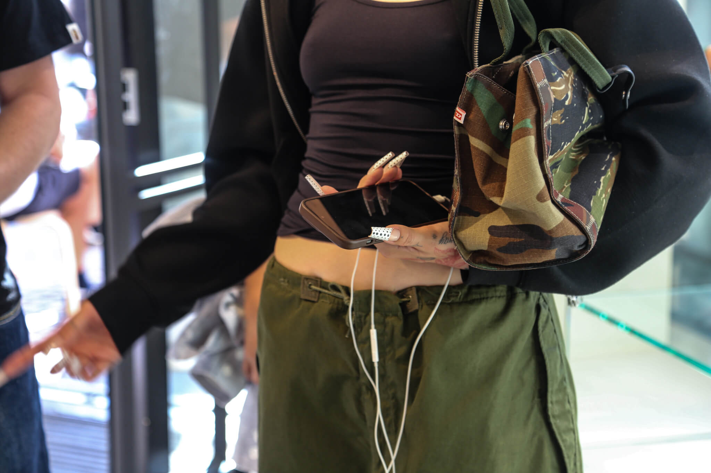
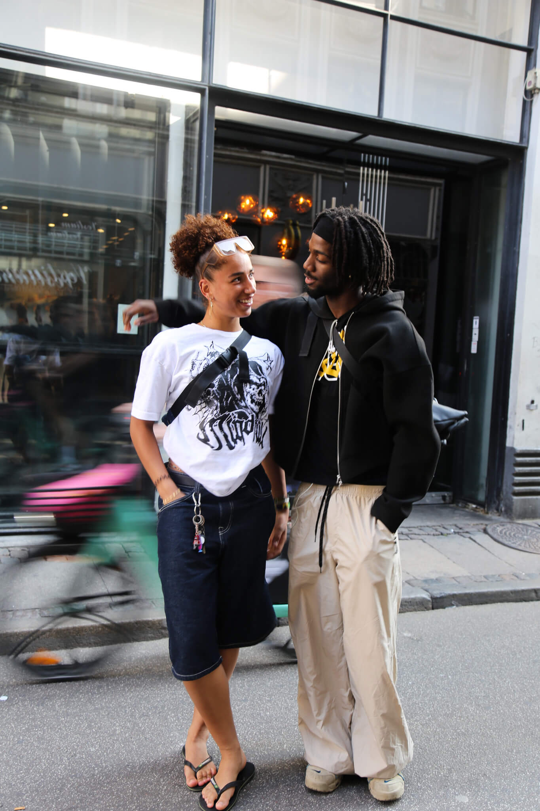

STREETWEAR
STRØMMER GENNEM
KØBENHAVNS GADER
SOMMER SÆSONEN ER OVRE
LAD OS SE HVAD DER TRÅDTE UD PÅ GADEN
Streetwear er ikke et look - det er en følelse. Det handler ikke om at matche, men om at få det til at føles rigtigt. Små detaljer gør hele forskellen.
NÅR TØJET FØLES SOM DIG
Det handler ikke om trends, men om at finde det, der føles rigtigt.
Det er en personlighed i bevægelse. Små valg, ingen stress. Du tager det på, det føles godt. Simpelt, roligt og med den rigtige stemning.
København har sin egen rytme, og du kan se den i gadebilledet denne sæson.
DIN OFFICIELLE GUIDE TIL SÆSONENS KOLDE MUST-HAVES
Vinteren er landet, og det betyder lag-på-lag, store jakker og sko, der kan klare vejret. Her er fem ting, der gør dig klar til kulden - uden at gå ned på stil.
Nike Shox Z
De nye Shox Z rammer balancen mellem retro og future. Hvid, grå og sølv - clean, teknisk og nemme at style.
Mertra Heat Activated Puffer
Alle har brug for en Puffer Jacket. Mertra gør det anderledes, deres Heat activated puffer gør det subtle, men skiller dig ud fra mængden.
Glossy Black Timberlands
Den klassiske Timberland, som du kender. Denne gang med glossy finish, samme rå udtryk. Praktisk, men stadig luksus.
Attode Raw Denim
Attode raw denim jeans falder tungt, ser afslappede ud og fungerer med alt fra sneakers til boots. Et par, man ender med at bruge hver dag, fordi de bare føles rigtige.